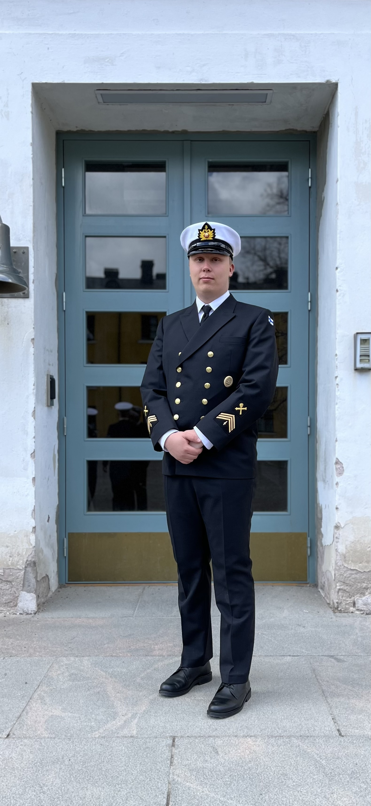

Elmo Pekonen
'
Työhistoria:
- - 05/2015–08/2017 Minigolf työntekijä, KOY honkahalli
- - 11/2019–02/2020 Liikunnan opettajan sijainen, Omnia Leppävaara
- - 05/2020–09/2021 Keittiösuunnittelija, Ikea Espoo
- - 09/2021–11/2022 Sopimussotilas, Puolustusvoimat, Upinniemi
- - 12/2022-present Opetusaliupseeri, tiedustelujoukkueenvarajohtaja (erikoistuminen ensiapu)
Koulutus:
- - Ylioppilas 2018, Helsingin ranskalais-suomalainen koulu
- - It-tradenomi 2024 aloittanut opinnot, arvioitu valmistuminen syksyllä 2027
Saavutukset:
- - Lukiosta liikunta- stipendi
- - Aliupseerien perustutkinnolla ryhmähengen edistäjä- stipendi
